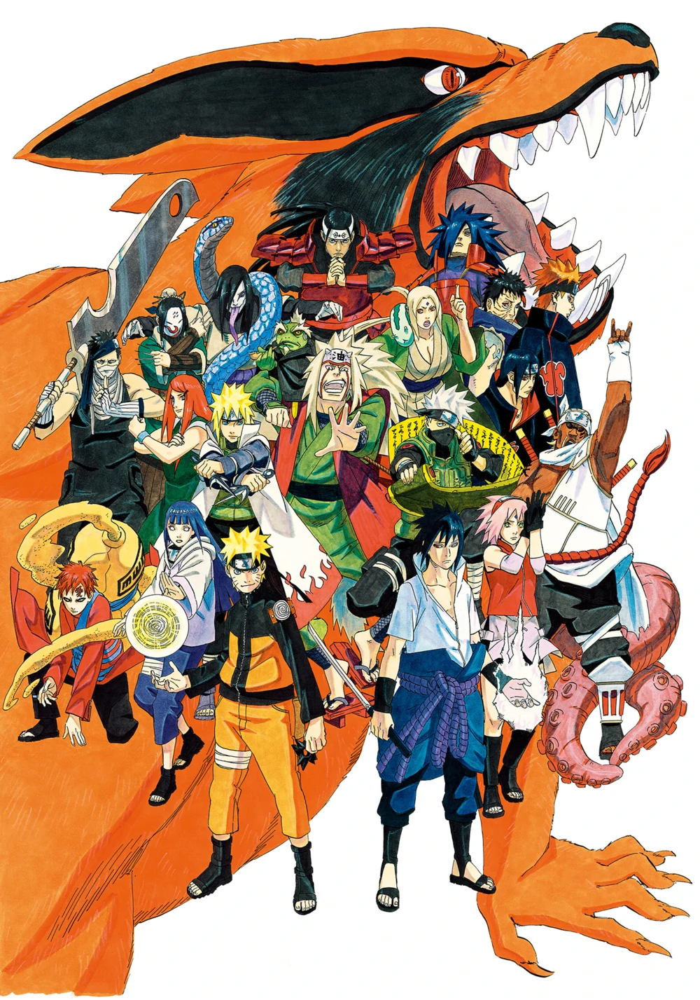

About Naruto Manga

Naruto (NARUTO -ナルト-) is a manga by Masashi Kishimoto with an anime
TV series adaptation. Its main character, Naruto Uzumaki, is a loud,
hyperactive, adolescent ninja who constantly searches for approval and
recognition, as well as to become Hokage, who is acknowledged as the
leader and strongest of all ninja in the village.
The manga was first published by Shueisha in 1999 in the 43rd issue of
Japan's Shōnen Jump magazine. VIZ Media publishes a translated version
in the American Shōnen Jump, and is currently within a few volumes of
the Japanese publication. Naruto has become VIZ Media's best-selling
manga series.
The animated television series, produced by Studio Pierrot and Aniplex,
premiered across Japan on the terrestrial TV Tokyo network and the anime
satellite television network Animax on October 3, 2002, and stopped
airing in 23rd March 2017. Viz also licensed the anime for North
American production. Naruto debuted in the United States on Cartoon
Network's Toonami programming block on September 10, 2005, and in Canada
on YTV's Bionix on September 16, 2005. Naruto began showing in the UK on
Jetix on July 22, 2006. It began showing on Toasted TV on January 12,
2007 in Australia, although it could be watched on Cartoon Network in
2006. The first series lasted nine seasons, while the second began its
first on February 15, 2007.
In November 22, 2012, VP of Strategic Marketing and Promotions for
Cartoon Network, Jason DeMarco, announced Naruto would make a come back
to Toonami, now a block on Adult Swim on Saturday, December 1, 2012.
Additionally, they mentioned that it would be uncut. The show started
all the way back at episode 1 and was removed from the schedule after
episode 52 on November 30, 2013 due to Toonami announced will be
premieres January, 5 on Naruto: Shippūden.
Anime Details
Even though it debuted some time after the manga, the anime quickly
caught up, since one anime episode usually covers one or two manga
chapters. To prevent overlapping, the anime's producers tend to organise
content from the manga chapters into long, uneventful sections followed
by short bursts of action, sometimes adding filler content in between.
By the time the Sasuke Recovery Mission ended in the anime (episode
135), the series was at a point where it was quickly gaining on the
manga. At the conclusion of this arc, the anime immediately switched to
anime-only episodes to allow the manga to broaden the gap once more.
Most of these episodes are stand-alone stories, with a few being part of
arcs that were several episodes long, and lasted for a total of 85
episodes in the first series.
After the series moved back into manga-adapted episodes, it was renamed
Naruto: Shippūden (ナルト 疾風伝, Naruto Shippūden, literally meaning:
Naruto Hurricane Chronicles). The new series premiered on February 15,
2007.
The anime generally remains true to the manga, usually changing only
minor details (causes of death, loss of limbs, and other injuries have
been lessened in the anime) or expanding on parts skipped by the manga,
such as the fight between Tenten and Temari. The anime-only arcs, though
unreferenced in the manga (save for a few scant scenes), deal with the
breaks between manga volumes, which covers a short period before the
Sasuke Recovery Mission and several months before the time skip. The
anime-only arcs tend to cover the supporting characters, occasionally
giving insight into an otherwise rarely seen character.
Plot Overview
Twelve years before the events at the focus of the series, the
Nine-Tailed Demon Fox attacked Konohagakure. It was a powerful demon; a
single swing of one of its nine tails would raise tsunamis and flatten
mountains. It raised chaos and caused the deaths of many, until the
leader of Konoha, the Fourth Hokage, defeated it by sacrificing his own
life to seal the demon inside a newly-born child. That child's name was
Naruto Uzumaki.
The Fourth Hokage was celebrated as a hero for sealing the Nine-Tails
away. He wanted Naruto to be respected in a similar light by being the
containment vessel for the Nine-Tails. The village he grew up in,
however, mostly shunned Naruto; they regarded him as if he were the
Nine-Tails itself and mistreated him throughout most of his childhood.
A decree made by the Third Hokage made it so that the other villagers
were forbidden to mention the event to anyone, even to their own
children. However, this did not stop them from treating Naruto like an
outcast. Although their children did not specifically know why their
parents treated Naruto the way they did, they learned through example to
despise the boy. As a result, Naruto grew up as an orphan in a lonesome
atmosphere without friends, family, or acknowledgement. He could not
force people to befriend him, so he sought acknowledgement and attention
the only way he knew through pranks and mischief. However, that soon
changed after Naruto graduated from the Academy by using his Multiple
Shadow Clone Technique to save his teacher, Iruka Umino, from the
renegade ninja Mizuki. That encounter gave Naruto two insights: that he
was the container of the Nine-Tails, and that there was someone besides
the Third Hokage who actually cared about him. His graduation from the
academy opened a gateway to the events and people that would change and
define his world, including his way of the ninja for the rest of his
life.
Naruto maintains a balance between drama and comedy, with plenty of
action interspersed. It follows Naruto and his friends' personal growth
and development as ninja, and emphasises their interactions with each
other and the influence of their backgrounds on their personalities.
Naruto finds two friends and comrades in Sasuke Uchiha and Sakura
Haruno, two fellow young ninja who are assigned with him to form a
three-person team under a very experienced sensei named Kakashi Hatake.
Naruto also confides in other characters as well that he has met through
the Chūnin Exam. They learn new abilities, get to know each other and
other villagers better, and experience a coming-of-age journey as Naruto
dreams of becoming the Hokage of Konoha.
Naruto places strong emphasis on character development. Almost all
outcomes are a result of decisions, character, and personality; very few
things happen just because of chance. At first, emphasis is placed on
Naruto, Sasuke, and Sakura, who are the members of Team 7. However,
other characters are developed, such as Kakashi, Guy, and Jiraiya, as
well as Naruto's peers in the other Genin teams and other villages.
Several major villains came into play as well, the first being Zabuza
Momochi, a missing-nin from the Kirigakure, and his partner, Haku.
Later, in the Chūnin Exam Arc, Orochimaru is introduced as an S-Class
missing-nin at the top of Konoha's most wanted list, along with other
Otogakure ninja, including Kabuto Yakushi, Team Dosu and the Sound Four.
Later, a mysterious organisation called Akatsuki begins to pursue Naruto
in order to take the Nine-Tails inside him and harness its power.
Characters

Naruto has a large and colourful cast of characters, running a gamut of
detailed histories and complex personalities, and allowing many of them
their fair share in the spotlight; they are also seen to grow and mature
with the series, as it spans several years. As fitting for a
coming-of-age saga, Naruto's world constantly expands and thickens, and
his social relations are no exception during his introduction he has
only his teacher and the village's leader for sympathetic figures, but
as the story progresses, more and more people become a part of his
story.
The students at the Academy, where the story begins, are split up into
teams of three after their graduation and become genin. Each team is
assigned an experienced sensei. These core teams form a basis for the
characters' interactions later in the series, where characters are
chosen for missions for their team's strength and complementary skills;
Naruto's Team 7 becomes the social frame where Naruto is acquainted with
Sasuke Uchiha and Sakura Haruno, and their sensei Kakashi Hatake, also
called the "copy ninja" for copying thousands of ninja techniques with
his Sharingan, forming the core of his world-in-the-making. The other
three-man teams of his former classmates form another such layer, as
Naruto connects with them to various degrees, learning of their motives,
vulnerabilities, and aspirations, often relating them to his own. The
groups of three are not limited to the comrades Naruto's age groups in
the story in general come in threes and multiples of three with very few
exceptions.
Sensei-student relationships play a significant role in the series;
Naruto has a number of mentors with whom he trains and learns, most
notably Kakashi Hatake and Jiraiya, and there are often running threads
of tradition and tutelage binding together several generations. These
role models provide guidance for their students not only in the ninja
arts but also in a number of Japanese aesthetics and philosophical
ideals. Techniques, ideals, and mentalities noticeably run in families,
Naruto often being exposed to the abilities and traditions of
generation-old clans in his village when friends from his own age group
demonstrate them, or even achieve improvements of their own; it is
poignantly noted that Naruto's generation is particularly talented.
Many of the greater lingering mysteries of the series are questions of
character motives and identity. The legacy of Naruto's parents, the
goals that guide Kabuto Yakushi, the identity of the mysterious Akatsuki
leader these are only a few of the fundamental unanswered questions of
"who" and, by proxy, "why" currently at the core of the series. The
story is remarkably character-driven; the theme of causality runs
inherently throughout the series as characters reciprocate for their
past actions and relationships. In this respect, characters' respective
destinies are very much intertwined, and large emphasis is placed on
comradeship and 'bonds' between the community or individual.
External Links
English Online Encyclopaedias
English
Japanese